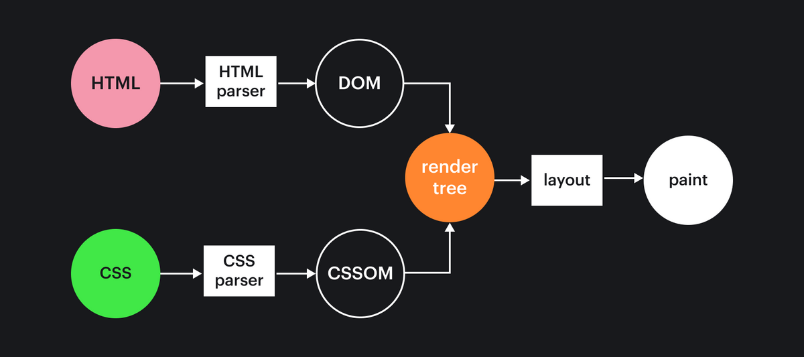
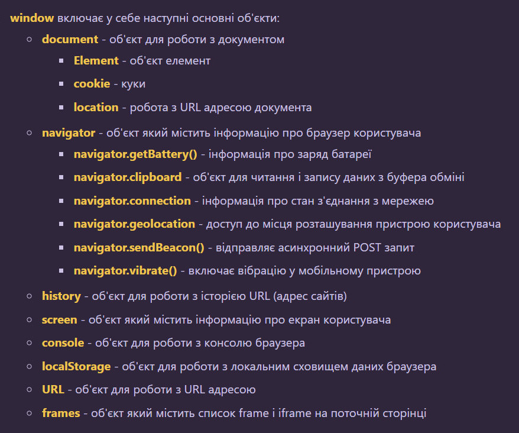
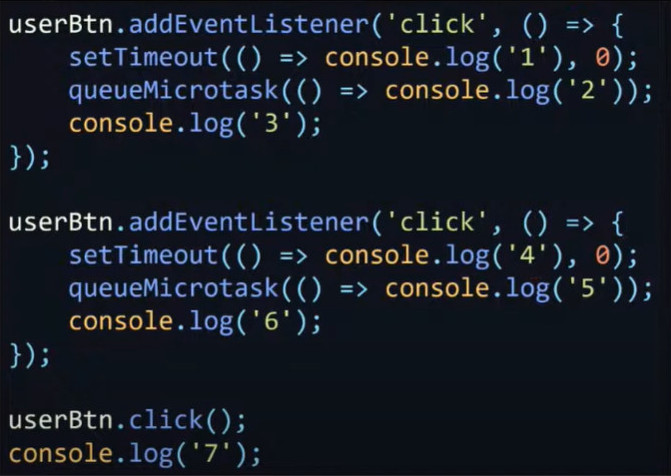
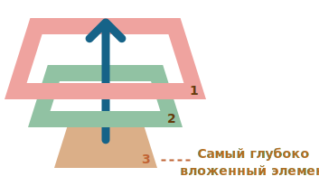

в браузере 2 движка:
движок браузера - (например Blink) для преобразования содержимого веб-страниц (файлы
HTML, XML, картинки...) и информации о форматировании (в форматах CSS,
XSL...) в изображение на экране. Движок браузера запускает JS движок
JS движок - (например V8) для компиляции js в машинный код
Компьютер не работает напрямую c js (не понимает js). Для работы компу нужен машинный
код (machine code runs on the CPU). Таким образом браузер, например Chrome (под капотом V8),
с помощью JS движка компилирует js в машинный код.
V8 — самый популярный JS движок (стоит во всех Cromium подобных браузерах). V8 также
стоит в Node.js
JavaScriptCore (SquirrelFish) — JS движок для Safari
SpiderMonkey — JS движок для Firefox
WebKit (Apple), Blink (Google, fork of WebKit), Gecko (Mozilla) — движки браузеров для
отображения веб-страниц. Эти движки управляют макетом сайта, а также включают движок JS,
который интерпретирует и компилирует JS код. Самый популярный из этих JS движков - V8;
он поддерживает не только браузер Chrome. V8 также поддерживает JS фреймворк Electron
(разработан GitHub), который позволяет создавать десктопные приложения.
Browser Engines
chrome devtools
вкладка Network:
- вес переданных данных указывается во вкладке resources снизу:
4.1 MB transferred
- время загрузки:
Finish: 12.08 s (по идее, Finish учитывает async скрипты, а Load нет)
- Time = такой сумме времен из tooltip'a Waterfall:
Stalled (время остановки по какой то причине)
+
Request sent (время запроса)
+
Waiting (TTFB) (время до получения первого байта)
+
Content Download (время загрузки)
Queueing из tooltip'a Waterfall показывает прошедшее от
начала загрузки страницы время, после которого начался запрос
Critical Rendering Path
Критические этапы рендеринга (Critical Rendering Path) - это последовательность шагов,
которые выполняет браузер, когда преобразуется HTML, CSS и JavaScript в пиксели, которые
вы видите на экране
Браузер загружает и отображает страницу постепенно по мере выполнения Critical Rendering Path:
DOM + CSSOM = render tree -> layout (flow) -> render (paint)
Чтобы нарисовать на экране результат работы нашего кода,
браузеру нужно выполнить несколько этапов:
- Сперва ему нужно скачать исходники (fetching)
- Затем их нужно прочитать (parsing)
- После этого браузер приступает к отрисовке (rendering)
parsing:
Браузер работает не с текстом разметки, а с абстракциями над ним. Одна из таких
абстракций, результат парсинга HTML-кода, называется DOM. DOM — это дерево (корень — HTML)
Пока браузер парсит документ и строит DOM, он натыкается на элементы типа img, link,
script, которые содержат ссылки на другие ресурсы
Если ресурс неблокирующий (изображение), браузер запрашивает его параллельно с парсингом
оставшейся части документа
Т.к. картинки не блокируют рендеринг страницы, они могут рендериться после отрисовки
документа => для них нужно предусмотреть placeholder
Блокирующие ресурсы (скрипты, стили, шрифты) приостанавливают обработку до своей
полной загрузки, а для js - до загрузки и до выполнения
Когда браузер находит элемент link, который указывает на файл стилей, браузер скачивает
и парсит его. Результат парсинга CSS-кода — CSSOM
Благодаря оптимизациям (например, сканеру предзагрузки) стили могут не блокировать чтение
HTML, но они точно блокируют выполнение JavaScript, потому что в JS могут использоваться
CSS-селекторы для выборки элементов

После того как у браузера появилось Render Tree, он начинает «расставлять» элементы на
странице. Этот процесс называется Layout (flow)
rendering (paint):
Во время отрисовки браузер наполняет пиксели на экране нужными цветами в зависимости от
того, что в конкретном месте должно быть нарисовано: текст, изображение, цвет фона, тени,
рамки и т.д.
Что влияет на CRP?
HTML-код: невозможно отобразить веб-страницу без полной загрузки HTML и построения
объектной модели документа (DOM). Отрисовка страницы может начаться только
после полной загрузки HTML.
CSS: имеет свою собственную объектную модель, CSSOM, которая также должна
быть создана и применена к DOM. Процесс построения CSSOM блокирует процесс
отрисовки.
Шрифты: загрузка всех подключаемых шрифтов страницы, на которые имеются ссылки
в DOM/CSSOM, также блокирует парсинг => рендеринг.
JavaScript: взаимодействуя как с HTML, так и с CSS, JavaScript потенциально является
наиболее “разрушительным” компонентом, влияющим на CRP. Пока JavaScript
загружается и выполняется, браузеры прекращают парсинг => рендеринг, если
не предпринимаются дополнительные шаги. В результате выполнения JS может
быть изменен DOM/CSSOM, что влечет за собой повторение всех шагов CRP сначала.
Изображения представляют собой простое содержимое и не оказывают никакого
влияния на рендеринг
* CSS блокирует рендеринг, а также выполнение JavaScript, но не блокирует парсинг
* JavaScript блокирует парсинг, потому что он блокирует построение DOM, когда мы
сталкиваемся с тегом script. Но если скрипт с defer (выполняется после парсинга
документа), то ни загрузка ни выполнение скрипта не повлияют на парсинг html-документа
и следовательно на рендеринг.
Некоторые скрипты не изменяют DOM или CSSOM и не должны блокировать рендеринг. Для них
лучше использовать async, чтобы они не блокировали построение DOM и не блокировались CSSOM'ом
* есть кроссбраузерный хак для внешнего стиля, чтобы его загрузка не блокировала
рендеринг (стиль применится только после загрузки):
<link rel='stylesheet' href='./style.css' media='print' onload='this.media="all"'>
Суть подхода в том, что бы разделить стили на критичные (для стилизации первого экрана)
и не кретичные (не влияющие на первый экран). Не кретичные стили нужно загружать этим
хаком, а критичные инлайново
Контент (все компоненты, входящие в CRP) загружается браузером отдельными «фрагментами».
Каждый фрагмент сайта состоит из пакета данных размером до 14 KB, что в результате ведет к
более быстрой загрузке веб-страницы размером 14 KB или меньше (каждый пакет TCP может быть
до 14 KB). Для страницы 15 KB потребуются уже два фрагмента.
В CRP должны быть включены только коды/ресурсы, необходимые для визуализации первого
экрана (Above The Fold).
Нужно поместить критически важные компоненты (части HTML/CSS/JS/шрифты, которые имеют
решающее значение для отрисовки содержимого в одном экране) в первые 14 КБ. А оставшееся
содержимое загружать асинхронно, либо переместить ниже в коде.
html:
- минифицировать html-документ
css:
- минифицировать css
- разделить стили на критичные (для стилизации первого экрана)
и не кретичные (не влияющие на первый экран). Не кретичные
стили нужно загружать с помощью media='print', а критичные -
прописывать инлайново в html
fonts:
- использовать fallback шрифт (sans-serif...), который отобразит
текст до подгрузки основного кастомного шрифта
images:
- минифицировать, использовать webp, svg, по возможности
перегнать в base-64 для экономии числа запросов
- лучше предусмотреть placeholder для картинок, что бы
не было скачков в момент их отрисовки
js:
- минифицировать
- чтобы не блокировать парсинг html - добавить скрипт перед
закрывающим тегом body + добавить defer (если взаимодействует
с DOM) или async (если не взаимодействует с DOM)
other:
- use HTTP/2 on your server (or CDN)
- lazy loading parts of your application outside the viewport,
for example, by using the loading attribute on the img and
iframe elements. If you do, have a backup plan for SEO (e.g
render full page for bot traffic)
- using resource hints such as:
rel=preconnect, rel=dns-prefetch, rel=prefetch, rel=preload
Window / Web APIs
Для JS на стороне клиента существует множество Web APIs, которые не являются частью языка.
Web APIs - это различные API предоставляемые браузером и используемые в нашем JS-коде
для выполнения различных действий.
Пример Web API: DOM API для манипуляции с DOM, Fetch API для сетевых запросов, IndexedDB API,
Canvas API, Intersection Observer API, Blob...
* объект Windows создается автоматически для каждого окна браузера
Окружение предоставляет свои объекты и дополнительные функции, в дополнение
базовым языковым.
На схеме в общих чертах показана часть того, что доступно для JS в браузерном окружении:
window (globalThis)
/ | \
DOM BOM JavaScript
document (window.document navigator (window.navigator) Object (window.Object)
- экземпляр класса HTMLDocument) screen Array
... location Function
frames Error
history ...
console
XMLHttpRequest
 * window.document.location === window.locationасинхронность / event loop
JavaScript работает в однопоточном режиме (один стек вызовов), т.е.
только одна операция может быть выполнена в определенный момент времени.
* Для многопоточности нужно использовать Web Workers - механизм, который
позволяет скрипту выполняться в фоновом потоке, который отделен от основного потока
веб-приложения. Преимущество заключается в том, что ресурсоёмкие вычисления могут
выполняться в отдельном потоке, позволяя запустить основной (обычно пользовательский)
поток без блокировки и замедления.
синхронное выполнение кода — следующая операция не выполняется до завершения
предыдущей (например, пока не закроется alert).
Или допустим у нас есть 2 строки кода: строка 2
не может запуститься до тех пор, пока строка 1 не
закончит своё выполнение
call stack — структура данных в JS, которая в основном записывает, где
мы находимся в программе. Если мы переходим в функцию, мы помещаем ее
на вершину стека. Если мы возвращаемся из функции, мы убирает ее из
верхней части стека. Каждая запись в стеке вызовов называется кадром
стека (stack trace; console.trace() - выведет все кадры стека).
* За обработку call stack отвечает JS движок
Когда движок начнет выполнять этот код, стек вызовов будет пуст:
function multiply(x, y) {
return x * y
console.trace() // выведет текущий call stack
}
function printSquare(x) {
var s = multiply(x, x)
console.log(s)
}
printSquare(4)
call stack:
step 1 -> step 2 -> step 3 -> step 4 -> step 5
(empty stack)
multiply(x, x) console.log(s)
printSquare(4) printSquare(4) printSquare(4) printSquare(4)
Event Loop:
* механизм Event Loop, реализующий неблокирующую модель ввода и вывода callback'ов
в очередь, не является частью js, а относится к браузерному JS движку (V8), который
компилирует js в машинный код.
Не смотря на то что и в браузере и в NodeJS движок V8, Event Loop в браузере и
в NodeJS работают по разному, хоть и решают одну задачу.
Работа Event Loop в браузере:
1. когда интерпритатор доходит до асинхронной функции, относящейся
к web api (манипуляции с DOM (рендеринг чего либо), addEventListener, fetch,
setTimeout, postMessage...), он пропускает ее и идет дальше, а эта функция начинает
выполняться браузером
2. когда функция из web api готова (прошло время setTimeout, зарегистрировался
слушатель...), она попадает в очередь callback queue (macrotask queue)
3. после выполнения синхронного кода, колбэки из callback queue по очереди,
по которой попали в callback queue, попадают в call stack и исполняются
* колбэк из setTimeout с заданым временем выполнится через >= этого время, т.к.
колбэки из очереди попадают в call stack только когда тот пуст; (в call stack может
выполняться затратная операция на момент истечения времени заданого в setTimeout)
* если нужно выполнять функцию, время выполнения которой существенно, строго
через определенное время после выполнения предыдущей, то лучше вместо setInterval
использовать вложенный setTimeout. Т.к. setInterval начнет отсчет сразу после
запуска колбэка не дожидаясь его выполнения. Пример:
setTimeout(cb = () => {
// some actions
setTimeout(cb, 200)
}, 200)
* рендеринг изменений в браузере происходит только после выполнения ф-ии, а не в процессе,
т.к. рендеринг чего либо - это манипуляции с DOM => задача из callback queue.
Если ф-я тяжелая, то пока ее выполнение не завершится мы не увидим результат на экране
=> что бы браузер рендерил каждое изменение на экране, нужно разбить тяжелую ф-ю на
множество легких с помощью setTimeout;
это касается не только отрисовки, но и впринципе event loop - пока в call stack
выполняется тяжелая ф-я, интерфейс браузера заблокирован - не будут выполняться
обработчики событий и прочие колбэки из callback queue. Поэтому тяжелые задачи лучше
разбивать на части с помощью setTimeout
макро и микро задачи:
Существуют макро и микро задачи и соответственно macrotask queue (callback queue)
и microtask queue (promise jobs)
Макрозадачи приходят из web api, а микрозадачи - только из js кода!
Макрозадачи: загрузка внешнего скрипта, манипуляции с DOM (изменение контента,
узлов...), fetch, обработка событий, setTimeout, setInterval, postMessage...
Микрозадачи: обработчики промисов, async/await и MutationObserver
* сразу после выполнения каждой макрозадачи движок исполняет все задачи из очереди
микрозадач c отрисовкой изменений (если они есть) после выполнения всех микрозадач
перед тем, как выполнить следующую макрозадачу.
У микрозадач приоритет над макрозадачами, они выполняются как можно быстрее!
* чтобы добавить в очередь новую макрозадачу используется setTimeout(func) с нулевой
задержкой;
для добавления в очередь новой микрозадачи применяется ф-ия queueMicrotask(func)
или резолвится промис: Promise.resolve().then(func)
requestIdleCallback(func) - ставит в очередь функцию, которая будет вызываться
во время периодов простоя браузера - когда event loop
в режиме ожидания. Возвращает id, который может быть
использован для отмены: cancelIdleCallback(id)
пример 1:
console.log('script start')
const interval = setInterval(() => {
console.log('setInterval')
}, 0)
setTimeout(() => {
console.log('setTimeout 1')
Promise.resolve()
.then(() => console.log('promise 3'))
.then(() => console.log('promise 4'))
.then(() => {
setTimeout(() => {
console.log('setTimeout 2')
Promise.resolve().then(() => console.log('promise 5'))
.then(() => console.log('promise 6'))
.then(() => clearInterval(interval))
}, 0)
})
}, 0)
Promise.resolve()
.then(() => console.log('promise 1'))
.then(() => console.log('promise 2'))
консоль выведет:
'script start'
'promise 1'
'promise 2'
'setInterval'
'setTimeout 1'
'promise 3'
'promise 4'
'setInterval'
'setTimeout 2'
'promise 5'
'promise 6'
пример 2:

консоль выведет: 3 6 7 2 5 1 4
// в момент нажатия стэк пустой => в стэк из очереди макрозадач попадут обработчики;
// т.к. эмитируем клик програмно, то клики совершены одновременно и 2 обработчика
// попадут в стэк один за другим, не пропуская микротаски
пример 3:
(function() {
console.log('start')
for (var i = 0; i < 100; i++) {
// здесь IIFE будет сохранять локальную переменную i при каждом вызове =>
// колбэк в setTimeout будет брать ее, а не var, который уже к моменту попадания
// первого колбэка в call stack будет равен 100.
// Если бы не было IIFE, то решением было бы поменять var на let, что бы внутри
// каждого блока (тела цикла) создавалась новая i, т.к. у var нет блочного scope
((i) => setTimeout(() => console.log(i), 15))(i)
}
console.log('end')
})()
Document / nodes / styles
навигация по DOM-элементам атрибуты и свойства создание / вставка / удаление узлов стили и классы table
DOM – объектная модель документа, которая представляет все содержимое страницы
в виде объектов, которые можно менять. Все, что есть в HTML, даже комментарии,
является частью DOM
DOM-узлы – это обычные объекты JS. Мы можем их изменять, добавлять св-ва,
методы.
Каждый DOM-узел принадлежит определённому классу. Классы формируют иерархию.
Весь набор свойств (href, value...) и методов (querySelector, append...)
является результатом наследования
Для узлов-элементов большинство стандартных HTML-атрибутов автоматически
становятся свойствами DOM-объектов. Например, для <body id='page'> у DOM-объекта
будет такое свойство body.id='page'.
Для нестандартных атрибутов (например, <body type=''>) не будет соответствующих
DOM-свойств (alert(body.type) - undefined). Но такие атрибуты доступны с помощью
методов для атрибутов ( elem.getAttribute(name)... )
Получив DOM-node мы получаем объект со встроенными DOM-свойства (href, value...)
и DOM-методами (querySelector, append...) + со стандартными св-ми и методами объектов JS
Можно выделить какой то элемент в devTools и в консоле набрать console.dir($0).
Мы увидем огромное количество свойств у DOM-node объекта.
Поэтому самая затратная работа в JS - работа с DOM
DOM-узлы можно изменять, добавлять св-ва, методы.
Например, создадим новое св-во у document.body:
document.body.myData = {
name: 'Caesar',
title: 'Imperator'
}
DOM-свойства и методы ведут себя так же, как и обычные объекты JS:
- им можно присвоить любое значение
- они регистрозависимы (нужно писать elem.nodeType, не elem.NoDeTyPe)
Получая набор из нескольких DOM-узлов с помощью, например, метода childNodes,
мы получаем коллекцию NodeList - особый перебираемый псевдомассив (можно
перебрать в for..of, есть forEach()).
Можно использовать Array.from() или [...nodes] для создания массива из коллекции
главные свойства DOM-узла:
node/elem.nodeType == 1 для узлов-элементов
== 3 для текстовых
== 9 для объектов документа
node/elem.nodeName/tagName - только для чтения
elem.innerHTML - внутреннее HTML-содержимое узла-элемента
elem.outerHTML - внешнее HTML-содержимое узла-элемента, т.е. включая elem
node.data - cодержимое узла-неэлемента: текста, комментария
elem.textContent - читает текст без учета тегов;
записывает «как текст», даже если есть теги
elem.hidden - если значение true, делает то же, что и CSS display: none
<html/> - document.documentElement
<head/> - document.head
<body/> - document.body
Получив DOM-узел, мы можем перейти к его ближайшим соседям используя
навигационные ссылки. Есть два основных набора ссылок:
для всех узлов (теги, текст, комментарии...):
* childNodes содержит и текстовые узлы в т.ч.
parentNode, childNodes, firstChild, lastChild, previousSibling, nextSibling
только для узлов-элементов (тегов):
parentElement, children, firstElementChild, lastElementChild,
previousElementSibling, nextElementSibling
elem.matches(selector) - [boolean], проверяет, удовлетворяет ли elem CSS-селектору
elem.closest(selector) - ищет ближайшего предка включая себя, соответствующего CSS-селектору
elemA.contains(elemB) - вернёт true, если elemB находится внутри elemA
Атрибуты – это то, что написано в HTML.
Свойства – это то, что находится в DOM-объектах.
Значением атрибута может быть только строка, а свойства - любой тип, как у обычного объекта.
У св-ва имя регистрозависимо, а у атрибута - нет.
В большинстве ситуаций предпочтительнее использовать DOM-свойства
методы для работы с атрибутами:
elem.hasAttribute(name) – проверить на наличие
elem.getAttribute(name) – получить значение
elem.setAttribute(name, value) – установить значение
elem.removeAttribute(name) – удалить атрибут
elem.attributes – это коллекция всех атрибутов
атрибуты «data-...» доступны в свойстве dataset (например, data-about='')
elem.dataset.about - доступно чтение и запись
создание:
document.createElement(tag) – создаёт элемент с заданным тегом
document.createTextNode(value) – создаёт текстовый узел
elem.cloneNode(deep) – клонирует элемент, если deep==true,
то со всеми дочерними элементами
вставка и удаление:
если добавить существующий элемент, то он вырежется
node.append(...nodes or strings) – добавляет узлы или строки (текст) в конец node
node.prepend(...nodes or strings) – вставляет узлы или строки в начало node
node.before(...nodes or strings) – вставляет узлы или строки перед node
node.after(...nodes or strings) – вставляет узлы или строки после node
node.replaceWith(...nodes or strings) - заменяет node заданными узлами или строками, не удаляя
node.remove() – удаляет node
elem.insertAdjacentHTML(where, html) - вставляет фрагмент HTML в зависимости от where
'beforebegin' – вставляет html прямо перед elem
'afterbegin' – вставляет html в elem в начало
'beforeend' – вставляет html в elem в конец
'afterend' – вставляет html сразу после elem
elem.insertAdjacentText(where, text) - вставляет текстовые строки
elem.insertAdjacentElement(where, element) - вставляет элементы
HTML5 не позволяет динамически добавлять теги script с помощью innerHTML,
insertAdjacentHTML! Нужно создавать тег script и динамически добавлять в DOM.
Например создание инлайн скрипта:
var newScript = document.createElement("script")
var inlineScript = document.createTextNode("alert('Hello World!')")
newScript.appendChild(inlineScript)
elem.className – строковое значение, удобно для управления всем набором классов
elem.classList – объект с методами add/remove/toggle/contains, для
управления отдельными классами; classList перебираемый
elem.style – это объект, который соответствует только тому, что есть в атрибуте 'style';
используя elem.style, мы не можем прочитать ничего, что приходит из классов CSS (для
этого есть getComputedStyle()); возвращает строку; все св-ва с дефисом через camelCase:
elem.style.width = '5px' document.body.style.display = '' - для удаления стиля
свойство style.cssText соответствует всему атрибуту 'style', полной строке стилей;
для задания нескольких стилей в одной строке используется свойство style.cssText:
div.style.cssText = `color: red;
width: 100px;`
для чтения окончательных стилей из css + атрибута style (после
применения всех CSS-правил и CSS-наследования) используется getComputedStyle:
let computedObj = getComputedStyle(elem, [pseudo]).marginTop - только для чтения,
возвращает строку '5px'
записывать св-ва можно только в атрибут 'style', в css нельзя! из css только чтение
таблица поддерживает следующие свойства:
table.rows – коллекция строк <tr> таблицы
table.caption/tHead/tFoot – ссылки на элементы таблицы <caption/>, <thead/>, <tfoot/>
table.tBodies – коллекция элементов таблицы <tbody/>
(по спецификации их может быть больше одного)
thead/tbody/tfoot.rows – коллекция строк <tr> секции
tr.cells – коллекция <td> и <th> ячеек, находящихся внутри строки <tr>
tr.sectionRowIndex – номер строки <tr> в текущей секции <thead>/<tbody>/<tfoot>
tr.rowIndex – номер строки <tr> в таблице (включая все строки таблицы)
td.cellIndex – номер ячейки в строке <tr>
size / scroll / coordinates
все св-ва только для чтения, кроме scrollLeft и scrollTop
все св-ва возвращают number
offsetParent – ближайший CSS-позиционированный родитель
или ближайший td, th, table, body
offsetLeft / offsetTop – позиция в пикселях верхнего левого угла относительно offsetParent
(transform не влияет; значение округляется до целого числа)
offsetWidth / offsetHeight – «внешняя» ширина/высота элемента clientWidth + scrollBar + border
clientLeft / clientTop – расстояние от верхнего левого внешнего угла до
внутренного offsetWidth - clientWidth = scrollBar + border
clientWidth / clientHeight – ширина/высота видимого содержимого вместе с padding,
но без scrollbar content + padding - scrollBar
scrollLeft / scrollTop – ширина/высота прокрученной части элемента от верхнего левого угла
scrollWidth / scrollHeight – ширина/высота содержимого, аналогично clientWidth/Height,
но учитывает прокрученную, невидимую область элемента
offset: content + padding + scrollBar + border
client: content + padding (только видимая область элемента, если у него есть скролл.
Если скролла нет - вся область элемента, даже если его не видно
в окне браузера из-за прокрутки страницы)
scroll: content + padding (учитывает и прокрученую невидимую область элемента со скроллом)
* scrollbar вообще, если есть, является частью padding'a - прибавляется к величине padding
window.clientWidth не бывает window.innerWidth/Height - ширина/высота окна с учетом scrollBar, только для чтения способ получить полную высоту документа, учитывая несоответствия/ошибки браузеров: const scrollHeight = Math.max( document.body.scrollHeight, document.documentElement.scrollHeight, document.body.offsetHeight, document.documentElement.offsetHeight, document.body.clientHeight, document.documentElement.clientHeight ) window.pageXOffset/pageYOffset - текущая прокрутка страницы, только для чтения window.scrollBy(x,y) - прокручивает страницу относительно её текущего положения window.scrollTo(pageX,pageY) - прокручивает страницу на абсолютные координаты; возможен вызов с объектом опций для плавной прокрутки: window.scrollTo({ top: 0, behavior: 'smooth' }) если top=true (по умолчанию) - elem появится в верхней части окна; если false - нижний край элемента будет совмещён с нижним краем окна elem.scrollIntoView(top) - прокручивает страницу к элементу
Любая точка на странице имеет координаты:
- относительно окна браузера, даже если элемент находится
вне окна (вне видимости). Отсчет от border, если есть:
elem.getBoundingClientRect() - возвращает объект со св-ми:
x/y, width/height, top/bottom, left/right
- относительно документа, например:
elem.getBoundingClientRect().top + window.pageYOffset
Объект MediaQueryList хранит информацию о мультимедийном запросе, примененном к документу
var mql = window.matchMedia('(max-width: 600px)')
function screenTest(e) {
if (e.matches) {
/* the viewport is 600 pixels wide or less */
} else {
/* the viewport is more than 600 pixels wide */
}
}
screenTest(mql)
mql.addEventListener('change', screenTest, false)
events
3 способа назначения / удаления обработчиков всплытие и погружение делегирование действия браузера по умолчанию генерация пользовательских событий интерфейсные события
3 способа назначения / удаления обработчиков: on{event} - aтрибут: onclick='functionDo(this.innerHTML)' тут functionDo возвращает function(event){} on{event}; убрать обработчик: elem.onclick = null; т.к. у элемента может быть только одно свойство с именем onclick, то назначить более одного обработчика нельзя! - DOM_свойство: elem.onclick = function(event) { alert('click') } позволяют повесить несколько обработчиков на одно событие! для удаления нужно передать именно ту же функцию-обработчик которая была назначена - метод: elem.addEventListener(event, handler[, options]) - для добавления elem.removeEventListener(event, handler[, options]) - для удаления внутри обработчиков this ссылается на текущий элемент!
принцип всплытия - когда на элементе происходит событие, обработчики
сначала срабатывают на нём, потом на его родителе,
затем выше и так далее, вверх по цепочке предков

* почти все события всплывают
event.target - самый глубокий элемент, вызывающий событие, называется
целевым элементом
event.currentTarget - элемент, до которого дошло всплытие, на нём сейчас
выполняется обработчик (он же this в обработчике)
event.stopPropagation() - останавливает всплытие
event.stopImmediatePropagation() - не только останавливает всплытие, но и
останавливает обработку событий у текущего элемента
любой промежуточный обработчик может решить, что
событие полностью обработано, и остановить всплытие
* не прекращайте всплытие без необходимости, т.к. stopPropagation может
создать «мёртвую зону» для статистики, когда мы кликаем на элемент со stopPropagation
Существует ещё одна фаза из жизненного цикла события – погружение (иногда
её называют перехват). Она очень редко используется в реальном коде, однако тоже
может быть полезной
стандарт DOM Events описывает 3 фазы прохода события:
фаза погружения (capturing phase) – событие сначала идёт сверху вниз
фаза цели (target phase) – событие достигло целевого элемента
фаза всплытия (bubbling stage) – событие начинает всплывать
чтобы поймать событие на стадии погружения, нужно
использовать третий аргумент capture вот так:
elem.addEventListener(..., {capture: true}) или просто true, как сокращение для {capture: true}
если аргумент false (по умолчанию), то событие будет поймано при всплытии
чтобы убрать обработчик removeEventListener, нужна та же фаза, например:
removeEventListener(..., true)
Если несколько обработчиков одного события, назначенных addEventListener на один
элемент, в рамках одной фазы, то их порядок срабатывания – тот же, в котором они установлены
Делегирование событий - прием, когда на общий для нескольких элементов предок-элемент
вешается обработчик, и в зависимости от цели (event.target) обрабатывются дочерние
элементы.
Это позволяет создавать один обработчик для нескольких элементов
Действий браузера по умолчанию достаточно много, например:
mousedown – начинает выделять текст (если двигать мышкой)
submit – при нажатии на <input type='submit'> или при нажатии
клавиши Enter в форме данные отправляются на сервер
keydown – при нажатии клавиши в поле ввода появляется символ
contextmenu – при правом клике показывается контекстное меню браузера
Бывают события, вытекающие из других
Например, mousedown для <input> приводит к фокусировке на нём и запускает
событие focus. Если мы отменим событие mousedown (т.е. действие браузера по
умолчанию), то фокусирование не произойдёт
Можно использовать event.cancelable чтобы проверить, является ли событие отменяемым
event.preventDefault() - отменить действие браузера по умолчанию; для обработчиков
назначенных через on{event} можно так же return false
* сначало выполняются действия в обработчике события, а затем действие по умолчанию, если
не отменено. Но действия в обработчике могут занимать много времени и для таких событий
как touchmove (пользователь перемещает палец по экрану => происходит прокрутка) это
критично, т.к. скролл будет запоздалым.
Есть способ выполнять дефолтное действие на событие одновременно с нашей обработкой,
а не после: указать необязательную опцию passive: true, которая сообщает браузеру,
что обработчик не собирается отменять дефолтное действие
* останавливать всплытие – плохо, т.к. например клик при всплытии может быть ипользован
для статистических счетчиков, а stopPropagation() закроет доступ к этому обработчику.
Лучше вместо этого проверять св-во event.defaultPrevented в обработчике вышестоящего
элемента, чтобы понимать что в обработчике одного из дочерних элементов уже отменялось
дефолтное действие и обрабатывалось такое же событие => не обрабатывать лишний раз в
родительском, если это не нужно:
в верхнем обработчике: if (event.defaultPrevented) return выходим из обработчика
Событие встроенного класса Event можно создать так:
const event = new Event(type[, options])
type – тип события, например 'click' или
любой придуманный нами: 'my-event'
options – объект с двумя необязательными свойствами
(по умолчанию оба свойства false):
- bubbles: если true - всплывает
- cancelable: если true - можно использовать preventDefault()
Для некоторых конкретных типов событий есть свои специфические конструкторы, например:
UIEvent, FocusEvent, MouseEvent, WheelEvent, KeyboardEvent... Стоит использовать их
вместо new Event. Специфический конструктор позволяет указать стандартные свойства для
данного типа события (clientX/clientY для события мыши)
const event = new MouseEvent('click', {bubbles: true, clientX: 100, clientY: 100})
Для генерации событий совершенно новых типов, таких как, например, 'hello', следует
использовать конструктор new CustomEvent. Технически CustomEvent абсолютно идентичен Event
за исключением небольшой детали: у второго аргумента-объекта есть дополнительное свойство
detail, в котором можно указывать информацию для передачи в событие, например:
let customEvent = new CustomEvent( 'hello', {detail: {name: 'Вася'}} )
Нужно использовать addEventListener для наших собственных событий.
on{event}-свойства существуют только для встроенных событий: document.onhello не сработает
после того, как объект события создан, мы должны запустить его на элементе, вызвав метод
elem.dispatchEvent(event)
можно отличить настоящее событие от сгенерированного кодом с помощью св-ва
объекта события event.isTrusted true для реальных действий пользователя
события мыши
простые события:
mousedown/mouseup - кнопка мыши нажата/отпущена над элементом
mouseover/mouseout - курсор появляется над элементом и уходит с него;
имеют дополнительное св-во relatedTarget, которое
содержит ссылку на элемент с/на который мы переходим
mouseenter/mouseleave - курсор переходит на элемент или уходит с него;
но переходы внутри элемента на его потомки и с них не
считаются; так же есть св-во relatedTarget; эти события
не всплывают, поэтому нельзя использовать делегирование!
mousemove - каждое движение мыши над элементом генерирует это событие
contextmenu - вызывается при попытке открытия контекстного меню правой кнопки мыши
комплексные события:
click - вызывается при mousedown и затем mouseup над одним
и тем же элементом, если использовалась левая кнопка мыши
dblclick - вызывается двойным кликом на элементе
cобытия мыши имеют следующие свойства:
- кнопка: button (0 - левая, 1 - колесо, 2 - правая)
- клавиши-модификаторы (true если нажаты): altKey, ctrlKey, shiftKey и metaKey (на Mac)
- координаты относительно окна: clientX/clientY
- координаты относительно документа: pageX/pageY
- скролл колеса мыши: wheel
В современном стандарте HTML5 есть раздел о Drag and Drop – и там есть специальные
события именно для Drag’n’Drop переноса, такие как dragstart, dragend и т.д.
Браузер имеет свой собственный Drag’n’Drop (события dragstart, dragend...), который
автоматически запускается и вступает в конфликт с нашим; это происходит именно для
картинок и некоторых других элементов; чтобы его отключить:
elem.ondragstart = function() { return false }
события клавиатуры
keydown – при нажатии на клавишу (если клавиша
остаётся нажатой, происходит автоповтор)
keyup – при отпускании клавиши
главные свойства:
code – код ('KeyA', 'ArrowLeft'), привязанный к
физическому расположению клавиши на клавиатуре
key – символ ('A', 'a' ...); при изменении
языка раскладки меняется и символ
repeat - для событий вызванных автоповтором свойство repeat равно true
событие прокрутки
scroll - событие позволяет реагировать на прокрутку страницы или элемента
forms
«именованная» коллекция форм (document.forms.my (name='my') или document.forms[0]) document.forms получаем элемент формы <input name='one'> с помощью св-ва elements; если несколько элементов с одним и тем же именем (radio), то form.elements[name] - коллекция const form = document.forms.my const elem = form.elements.one cокращённая форма записи form.elements.login == form.login * для любого элемента форма доступна через element.form (элементы хранят ссылку на свою форму) input.value = 'Новое значение' textarea.value = 'Новый текст' input.checked = boolean для чекбоксов и переключателей элемент <select> имеет 3 важных свойства: select.options – коллекция из подэлементов <option> select.value – значение выбранного в данный момент <option> select.selectedIndex – номер выбранного <option> свойства элемента <option>: option.selected - boolean option.index - номер опции среди других в списке option.text - содержимое опции создание элемента <option>: new Option(text, value, defaultSelected, selected) defaultSelected – если true, то ставится HTML-атрибут selected selected – если true, то элемент <option> будет выбранным
Элемент получает фокус (если он фокусируемый или если у него установлен tabIndex),
когда пользователь кликает по нему или использует клавишу Tab.
Существует HTML-атрибут autofocus - устанавливает фокус, когда страница загружается
Событие focus/blur не всплывают, но можно использовать или фазу погружения,
установив 3й параметр метода addEventListener в true, или всплывающие focusin/focusout
focus - вызывается в момент фокусировки, не всплывает
blur - вызывается когда элемент теряет фокус, не всплывает
focusin - вызывается в момент фокусировки, всплывает
focusout - вызывается когда элемент теряет фокус, всплывает
* нельзя отменить потерю фокуса, вызвав event.preventDefault() в обработчике
события blur потому, что onblur срабатывает после потери фокуса элементом
elem.focus() - устанавливеют фокус элементу
elem.blur() - снимает фокус c элемента
Многие элементы по умолчанию не поддерживают фокусировку; elem.focus() не работает
для них, и события focus/blur никогда не срабатывают.
Однако любой элемент поддерживает фокусировку, если имеет HTML-атрибут tabindex.
Порядок перебора табом таков: сначала идут элементы со значениями tabindex от 1
и выше, в порядке tabindex, а затем элементы без tabindex (например, обычный <input>)
elem.tabIndex - добавление tabindex из JavaScript
tabindex="-1" - позволяет фокусироваться на элементе только программно (методом elem.focus())
tabindex="0" - ставит элемент в один ряд с элементами без tabindex; то есть, при
переключении такие элементы будут после элементов с tabindex ≥ 1
document.activeElement - получить текущий элемент с фокусом
change - срабатывает по окончании изменения элемента; для текстовых <input>;
это означает, что событие происходит при потере фокуса; при печатанье
событие не происходит;
для select/checkbox/radio запускается сразу после изменения значения
input - срабатывает каждый раз при изменении значения; если значение не меняется,
например при нажатии стрелочки влево, то событие не срабатывает;
событие input происходит после изменения значения, поэтому
event.preventDefault() не сработает для отмены ввода
cut, copy, paste - события происходят при вырезании/копировании/вставке данных; свойство
event.clipboardData предоставляет доступ на чтение/запись в буфер обмена
Есть два основных способа отправить форму
(оба действия сгенерируют событие submit на форме):
– нажать кнопку <input type='submit'> или <input type='image'>
– нажать Enter, находясь на каком-нибудь поле
событие submit - срабатывает при отправке формы; обычно используется
для валидации формы перед её отправкой на сервер или
для предотвращения отправки и обработки её с помощью JS
* при отправке формы генерируется событие click на кнопке c type='submit'
form.submit() - инициирует отправку формы из JavaScript
load document and resources
defer
- скрипты с defer не блокируют страницу: ждут окончания парсинга HTML, полного
формирования DOM (=> подгрузки и выполнения остальных обычных скриптов (не
важно внешних или нет) без defer)
- скрипты с defer сохраняют порядок относительно друг друга
- выполняются до события DOMContentLoaded
async (скрипт абсолютно независим)
- скрипты с async не блокируют страницу
- остальные скрипты не ждут async, и скрипты c async не ждут другие скрипты
- скрипты с async не ждут друг друга
- событие DOMContentLoaded и асинхронные скрипты не ждут друг друга
* скрипты с async очень полезны для добавления на
страницу сторонних скриптов: счётчиков, рекламы и т.д.
Можно добавить скрипт динамически:
const script = document.createElement('script')
script.src = '/article/script-async-defer/long.js'
document.body.append(script)
Динамически загружаемые скрипты по умолчанию ведут себя как async. Можно изменить
относительный порядок скриптов с «первый загрузился – первый выполнился» на порядок,
в котором они идут в документе (как в обычных скриптах) с помощью явной установки
свойства async в false
DOMContentLoaded – (событие у document) браузер полностью загрузил HTML,
было построено DOM-дерево (=> загружены и выполнены все
скрипты (кроме скриптов с async и динамически сген-ых)),
но внешние ресурсы, такие как картинки, шрифты, стили,
могут быть ещё не загружены
load – (событие у window, после DOMContentLoaded) браузер
загрузил HTML и все внешние ресурсы (картинки, стили,
все скрипты (в т.ч. с async)...)
beforeunload – (событие у window) когда пользователь покидает страницу;
можно отменить переход на другую страницу в confirm
unload – (событие у window) когда пользователь покидает страницу
(обычно здесь отсылают статистику); отменить переход на
другую страницу нельзя
document.readyState – текущее состояние документа;
изменения можно отследить событием readystatechange (у document):
loading – документ грузится
interactive – документ прочитан, происходит примерно в то же
время, что и DOMContentLoaded, но до него
complete – документ и ресурсы загружены, происходит примерно
в то же время, что и window.onload, но до него
изображения, внешние стили, скрипты и другие ресурсы
предоставляют события load и error для отслеживания загрузки:
load - срабатывает при успешной загрузке
error - срабатывает при ошибке загрузки
* единственное исключение – это <iframe>: по историческим причинам
срабатывает всегда load вне зависимости от того, как завершилась
загрузка, даже если страница не была найдена
network / requests
internet / server / domain / HTTP / Socket URL, URI methods ASCII / Punycode request methods (CRUD) / AJAX / REST API / HTTP status codes XMLHttpRequest fetch / headers / body
интернет - очень большая сеть компьютеров, которые могут взаимодействовать друг с другом
сервер - мощный вычислительный компьютер, постоянно подключенный к сети интернет
и к электропитанию 24/7 (обычно хранит веб-страницы, сайты или приложения)
хост - сервер, который хранит веб-страницы, сайты или приложения
Каждый компьютер (включая сервер), подключённый к сети, имеет свой уникальный адрес
для связи: этот адрес называют IP-адресом (например 192.168.2.10).
Чтобы упростить себе жизнь, мы можем присвоить каждому IP-адресу псевдоним с понятным
для человека именем. Такой псевдоним называют доменным именем.
DNS хранит доменные имена связанные с IP-адресами.
Когда вы вводите веб-адрес в своём браузере, браузер обращается кближайшему DNS-серверу,
чтобы найти реальный адрес сервера (меняем домен на IP), на котором находится сайт, и
отправить на него запрос через 80 порт.
HTTP — это протокол (система правил) клиент-серверного взаимодействия (как и, например,
WebSocket), позволяющий получать различные ресурсы, например HTML-документы, и инициировать
запросы к серверу.
Что бы отправить запрос или получить ответ, между клиентом (браузером) и сервером нужно
установить некий канал связи для передачи данных. Этот канал получил название Socket.
Отправка данных между клиентом и сервером происходит по протоколу TCP (Transmission
Control Protocol - протокол управления передачей) с помощью пакетов (блоков данных), т.е.
частями. Каждый пакет TCP может быть до 14 KB.
HTTP vs TCP: TCP это протокол транспортного уровня, а HTTP — это протокол прикладного
уровня, работающий поверх TCP. Сам TCP работает поверх IP. В основном это означает, что
если вы общаетесь по HTTP, вы делаете это с помощью TCP/IP.
.com – домены первого уровня (доменные зоны)
example.com - домен второго уровня (example.com - поддомен домена .com)
subdomain.example.com - домены третье уровня
Обычно сайты лежат на сервере хостинг-провайдера (хостера) и к ним есть ftp доступ.
Самый простой способ определить хостинг сайта по домену:
- открываем консоль (Win + R: ввести 'cmd')
- вводим 'ping [domainName]' (ping anton-byshok.web.server). Видим IP (199.36.158.100)
- на сервисе https://sweb.ru/whois/, позволяющему определить какому провайдеру
принадлежит тот или иной IP-адрес вводим наш IP
У любого ресурса (HTML-страница, CSS-файл, изображение и т.д.) в интернете есть адрес,
называемый URL
URI (Uniform Resource Identifier) - универсальный id ресурса ( URI = URL + URN )
URN (Uniform Resource Name) - универсальное имя ресурса; почти не используется в web
URL (Uniform Resource Locator) - универсальный локатор ресурса (web address, link)
компоненты URL (URI):
Класс URL предоставляет интерфейс для создания и разбора URL-адресов. Существует
стандарт, который определяет список разрешённых и запрещённых символов в URL.
К счастью, URL кодирует запрещённые символы автоматически:
const url = new URL('https://ru.wikipedia.org/wiki/Тест')
url.searchParams.set('key', 'ъ') у экземпляра URL есть св-во searchParams
alert(url) https://ru.wikipedia.org/wiki/%D0%A2%D0%B5%D1%81%D1%82?key=%D1%8A
Нет сетевых методов, которые требуют именно объект URL, обычные строки тоже подходят.
Но, если мы используем строку, надо самим позаботиться о кодировании специальных символов,
в отличае от использования класса URL, где кодировка автоматическая.
Для кодирования строк есть встроенные функции:
encodeURI – кодирует URL-адрес целиком
decodeURI – декодирует URL-адрес целиком
encodeURIComponent – кодирует компонент URL, например, параметр, хеш, имя пути и т.п.
decodeURIComponent – декодирует компонент URL
* URL считается устаревшим термином, более новый - URI, поэтому и нет метода encodeURL
Разница между encodeURIComponent() и encodeURI() в том, что encodeURIComponent()
кодирует больше символов.
encodeURI не кодирует значения queryString или hash, а encodeURIComponent кодирует
encodeURI не кодирует: цифры, латинские буквы, #-_.!~*'(),;,/?:@&=+$
encodeURIComponent не кодирует: цифры, латинские буквы, -_.!~*'()
Для построения параметров поиска есть специальный класс URLSearchParams:
const querySearchParams = new URLSearchParams({ offset: 0, page_number: 1 })
Пример 1
encodeURI('http://www.yourdomain.com/a file.html') // http://www.yourdomain.com/a%20file.html
Пример 2
const music = encodeURIComponent('Rock&Roll')
const url = `https://google.com/search?q=${music}`
alert(url) // https://google.com/search?q=Rock%26Roll
Пример 3
const link = `mailto:?subject=${encodeURIComponent(name)}
&body=${encodeURIComponent(`Event Name: ${name}
Event Link: ${currentUrl}
`)}
`
Пример 4
function buildNextPageURL(request, token) {
const url = new URL(request)
const { search } = url // св-во search инстенса URL отдает компонент поиска (?p1=v1&p2=v2)
url.search = search + encodeURIComponent(`&pageToken=${token}`) // добавляем pageToken
return url.toString()
}
Пример 5
const page = (rawData) => {
const querySearchParams = new URLSearchParams({ offset: 0, page_number: 1 })
if (rawData) {
const offset = rawData.response?._links?.next?.query_params?.offset
querySearchParams.set('offset', offset)
}
return buildProxyURL(SOURCE_TYPE, `blog/${source}/posts?${querySearchParams}`)
}
export function buildProxyURL(provider, requestURL, params = {}) {
const baseURL = `${meta.proxyUrl}/api/${provider}`
const searchParams = new URLSearchParams({ q: requestURL, ...params })
if (meta.proxyBypassCache) {
searchParams.append('cache_bypass', 'true')
}
return `${baseURL}?${searchParams}`
}
Изначально стандартом DNS была разрешена регистрация доменов, содержащих только
символы в кодировке ASCII — 26 букв латинского алфавита (a-z), цифры (0-9) и символ
дефиса (всего 37 символов)
Однако с ростом количества пользователей, языки которых основаны на алфавитах отличающихся
от латинского, было решено ввести регистрацию доменов в кодировке Unicode, которая включает
символы всех национальных алфавитов. В результате этого решения появились многоязычные доменные
имена — Internationalized Domain Names (IDN-домены)
Punycode — это стандартизированный метод преобразования символов, относящихся
к стандарту Unicode, в формат ASCII, поддерживаемый инфраструктурой DNS.
Чтобы IDN-домен после преобразования нельзя было спутать с обычным доменом, все IDN-домены
начинаются со специального префикса «XN--».
Например, домен «домен.com.ua» в формате punycode будет выглядеть следующим образом:
xn--d1acufc.com.ua
Преобразование домена в Punycode и обратно производится на стороне браузера, поэтому
при введении в адресную строку IDN-домена браузер сам конвертирует введенное значение для
взаимодействия с DNS
кодирует/декодирует разные форматы, например toASCII кодирует
доменные имена на разных языках в латиницу (в кодировку ASCII):
punycode.toASCII('mañana.com') → 'xn--maana-pta.com'
import { toASCII } from 'punycode'
некоторые методы HTTP-запроса:
POST - (создание) sending new data C - create
GET - (получение) getting new data R - read
PUT - (полное обновление) updating existing data U - update
DELETE - (удаление) delete existing data D - delete
HEAD - запрашивает ресурс как и GET, но без тела ответа
PATCH - (частичное обновление (например, какое то поле))
OPTIONS - возвращает список доступных методов на сервере
* В GET запросах нельзя отправлять чувствительную информацию (например авторизационные
данные), т.к. у GET запросов нет тела (body) запроса => данные можно отправить только
в query параметрах, а это опасно, т.к. query параметры видны всем и не шифруются.
А в https в теле, например, POST запроса передавать такую инфу безопасно.
* Передаваемые по сети данные в формате JSON-строки для обработки сначало нужно распарсить.
Для сетевых запросов из JS есть широко известный термин AJAX - подход, позволяющий
отправлять сетевые запросы и получать ответы в фоновом режиме (без перезагрузки страницы
браузером) для обновления интерфейса.
REST API — (Representational State Transfer — «передача состояния представления»).
По сути это API сервера: набор Еndpoint'ов для взаимодействия с ним.
Сервер, получая какой то HTTP-запрос на REST API, может делать определенные
запросы в DB и на основании полученных данных отвечать клиенту.
В документациях прописывается правила взаимодействия: на какой Еndpoint
слать запрос, какого типа делать запрос, что отправлять в запросе, какие
данные отдаст сервер (html-документ (SSR), JSON (удобней всего) и т.д.)...
Еndpoint — url-адрес, на который мы шлем запрос на сервер, например для
авторизации (то есть это интерфейс сервера)

XMLHttpRequest – это встроенный в браузер объект, который даёт возможность
делать HTTP-запросы к серверу без перезагрузки страницы
3 шага чтобы сделать запрос:
1. создать XMLHttpRequest: const xhr = new XMLHttpRequest(); у конструктора нет аргументов
2. инициализировать его: xhr.open(method, URL, [async, user, password])
async – если указать false, тогда запрос будет выполнен синхронно
user, password – логин и пароль для базовой HTTP-авторизации (если требуется)
3. Послать запрос: xhr.send([body])
Некоторые типы запросов, такие как GET, не имеют тела. А некоторые,
как, например, POST, используют body, чтобы отправлять данные на сервер
наиболее используемые события на xhr:
load – происходит, когда получен ответ, включая ответы с HTTP-ошибкой, например 404
error – когда запрос не может быть выполнен, например, нет соединения или невалидный URL
progress – происходит периодически во время загрузки ответа, сообщает о прогрессе
после ответа сервера мы можем получить результат запроса в следующих свойствах xhr:
status - код состояния (200, 404, 403...)
statusText - сообщение о состоянии ответа HTTP: обычно 'OK' для 200, 'Not Found' для 404
response - тело ответа сервера
можно использовать свойство xhr.responseType, чтобы указать ожидаемый тип ответа:
'' (по умолчанию) – строка
'text' – строка
'arraybuffer' – ArrayBuffer (для бинарных данных)
'blob' – Blob (для бинарных данных)
'document' – XML-документ (может использовать XPath и другие XML-методы)
'json' – JSON (чтобы ответ был в виде распаршеного json)
у XMLHttpRequest есть состояния, которые меняются по мере выполнения запроса;
текущее состояние можно посмотреть в свойстве xhr.readyState (старое); список всех состояний:
UNSENT = 0; исходное состояние
OPENED = 1; вызван метод open
HEADERS_RECEIVED = 2; получены заголовки ответа
LOADING = 3; ответ в процессе передачи (данные частично получены)
DONE = 4; запрос завершён
XMLHttpRequest умеет как указывать свои заголовки в запросе,
так и читать присланные в ответ. Для работы с HTTP-заголовками есть 3 метода:
setRequestHeader(name, value) ( xhr.setRequestHeader('Content-Type', 'application/json') )
getResponseHeader(name) ( xhr.getResponseHeader('Content-Type') )
getAllResponseHeaders() возвращает все заголовки ответа, кроме Set-Cookie и Set-Cookie2;
в виде единой строки
пример XMLHttpRequest
const requestURL = 'https://jsonplaceholder.typicode.com/users'
function sendRequest(method, url, body = null) {
return new Promise( (resolve, reject) => {
const xhr = new XMLHttpRequest()
xhr.open(method, url)
// указываем, что отправляем данные в формате json (по дефолту стоит text/plain)
xhr.setRequestHeader('Content-Type', 'application/json')
xhr.send( JSON.stringify(body) ) // для GET без аргумента!
xhr.responseType = 'json' // чтобы ответ был в виде распарсеного json
xhr.onload = () => {
if (xhr.status >= 400) { // если статус-код > 400 (ошибка)
reject(xhr.response)
} else {
resolve(xhr.response)
}
}
xhr.onerror = () => {
console.log('нет соединения или невалидный URL')
}
})
}
sendRequest('GET', requestURL)
.then(data => console.log(data))
.catch(err => console.log(err))
const body = {
name: 'anton',
age: 27
}
// во вкладке network видно как статус становится 201 - created (создание чего-то)
sendRequest('POST', requestURL, body)
.then(data => console.log(data))
.catch(err => console.log(err))
fetch – современный браузерный метод для сетевых AJAX запросов и получения информации от сервера типичный запрос с помощью fetch состоит из двух операторов await: const response = await fetch(url, options) завершается с заголовками ответа const result = await response.json() читать тело ответа в формате JSON или: fetch(url, options) .then(response => response.json()) .then(result => console.log(result)) * без options это простой GET-запрос, скачивающий содержимое по адресу url процесс получения ответа обычно происходит в два этапа: 1. promise выполняется с объектом встроенного класса Response в качестве результата, как только сервер пришлёт заголовки ответа. На этом этапе можно проверить статус HTTP-запроса и определить, выполнился ли он успешно, а также посмотреть заголовки, но пока без тела ответа. Можно увидеть HTTP-статус в свойствах ответа: response.status - код статуса HTTP-запроса response.ok – будет true, если код HTTP-статуса в диапазоне 200-299 2. для получения тела ответа нам нужно использовать дополнительный вызов метода. Response предоставляет несколько методов (возвращающих промисы) для доступа к телу ответа в различных форматах: response.text() – читает ответ и возвращает как обычный текст response.json() – декодирует ответ в формате JSON response.formData() – возвращает ответ как объект FormData response.blob() – возвращает объект как Blob (бинарные данные с типом) response.arrayBuffer() – возвращает ответ как ArrayBuffer (низкоуровневое представление бинарных данных) response.body – это объект ReadableStream («поток для чтения»), с помощью которого можно считывать тело запроса по частям заголовки ответа хранятся в похожем на Map объекте response.headers. Это не совсем Map, но мы можем использовать такие же методы, как с Map, чтобы получить заголовок по его имени или перебрать заголовки в цикле: const url = 'https://api.github.com/repos/javascript-tutorial/en.javascript.info/commits' const response = await fetch(url) получить один заголовок alert(response.headers.get('Content-Type')) // application/json; charset=utf-8 перебрать все заголовки for (let [key, value] of response.headers) { alert(`${key} = ${value}`) } для отправки POST запроса в fetch нужно указывать дополнительные параметры (method, body (тело запроса то есть то с чем отправляется запрос), headers), например: let user = { name: 'John', surname: 'Smith' } let response = await fetch('/article/fetch/post/user', { method: 'POST', headers: { 'Content-Type': 'application/json' указываем серверу отправляемый формат данных (MIME type). При отправке объекта FormData (форма) - 'form/multipart' }, body: JSON.stringify(user) }) let result = await response.json() alert(result.message)
пример fetch (GET)
const requestFetchURL = 'https://jsonplaceholder.typicode.com/todos'
async function sendFetchGET(url) {
try {
let response = await fetch(url)
if (response.ok) { // если HTTP-статус в диапазоне 200-299
// получаем тело ответа (await возвращает результат промиса; json() возвращает промис)
let json = await response.json()
console.log(json)
} else {
// попадем сюда, если напимер запрос на 'https://jsonplaceholder.typicode.com/todosqqq'
console.error(`Ошибка HTTP: статус ${response.status}`)
}
}
catch(err) {
// если например мы обратились к несуществующей странице
// 'https://jsonplaceholder.typicode.com/todosqqq' на сервере
// (404 ошибка) и response.ok == false, то мы сюда не попадем
console.error(`ошибка при запросе, возможно не дошел до сервера`)
}
}
sendFetchGET(requestFetchURL)
пример fetch (POST)
const requestFetchURL_POST = 'https://jsonplaceholder.typicode.com/albums'
function sendFetchPOST(method, url, body = null) {
// т.к. тело запроса body – строка, то заголовок Content-Type по умолчанию будет text/plain
const headers = {
'Content-Type': 'application/json'
}
return fetch(url, {
method: method,
body: JSON.stringify(body),
headers: headers
})
.then( response => {
if (response.ok) {
return response.json()
}
// если код HTTP-статуса не в диапазоне 200-299
return response.json().then( error => {
const e = new Error(`Что то пошло не так... ошибка ${response.status}`)
e.data = error
throw e
})
})
}
const body = {
name: 'Vladilen',
age: 26
}
sendFetchPOST('POST', requestFetchURL_POST, body)
.then(data => console.log(data))
.catch(err => console.log(err))
http caching
CORS
Две страницы имеют одинаковый origin (источник) если протокол, хост (домен)
и порт (если указан) одинаковы для обоих страниц.
origin - это протокол + домен + порт (если указан): https://javascript.info
Правило одного источника (same-origin):
Если браузер запросил страницу из домена a.com, то и ajax-запрос из
загруженного на странице js файла должен быть послан по домену a.com.
Это касается и картинок, шрифтов, стилей запрашиваемых из других источников.
При запросе на другой источник браузер всегда ставит «от себя»
заголовок Origin, значением которого является домен источника
(Origin: https://www.a.com).
Доверенный источник (CORS):
CORS (Cross-Origin Resource Sharing) — механизм, использующий дополнительные
HTTP-заголовки, чтобы дать возможность браузеру получать разрешения на доступ
к выбранным ресурсам с сервера на источнике (домене), отличном от того, что
сайт использует в данный момент.
Что бы сервер (b.com) разрешил браузеру делать запрос на другой источник (b.com),
сервер может проверить Origin (Origin: https://www.a.com) и, если он согласен принять
такой запрос, добавить особый заголовок Access-Control-Allow-Origin к ответу:
Access-Control-Allow-Origin: a.com
Есть два вида запросов на другой источник:
- Простые. Простой запрос – это запрос, удовлетворяющий следующим условиям:
Простой метод: GET, POST или HEAD
Простые заголовки – разрешены только:
Accept,
Accept-Language,
Content-Language,
Content-Type со значением application/x-www-form-urlencoded,
multipart/form-data или text/plain
- Все остальные.
Когда мы пытаемся сделать непростой запрос, браузер посылает специальный
предварительный запрос (preflight) с методом OPTIONS, который спрашивает
у сервера – согласен ли он принять такой непростой запрос или нет?
И, если сервер явно не даёт согласие в заголовках preflight-ответа, непростой
запрос не посылается.
CORS proxy (для избежания CORS ошибок):
CORS proxy - прокси-сервер (посредник между браузером и другим
источником (b.com)), на который идет запрос браузера.
При запросе прокси-сервер отсылает запрос другому источнику (b.com) ->
получает ответ без CORS заголовка (Access-Control-Allow-Origin) ->
добавляет заголовки и отправляет ответ браузеру уже с заголовком.
Пример:
CORS_PROXY = 'https://cors-proxy.elfsight.com/'
Запрос: CORS_PROXY + 'https://files.elfsight.com/storage/a277.png'
XSS (Cross-site Scripting)
Cross-site Scripting - распространенный тип веб-атаки, заключающийся во
внедрении на страницу сайта или приложения вредоносного js-кода.
XSS является способом обхода правила одного источника.
Нельзя просто взять и вставить скрипт, чтобы он подгружался/исполнялся
на другом домене, это называется XSS (межсайтовый скриптинг)
Cookies & L/S Storages
Способы хранения данных в браузере:
1. Local Storage
2. Session Storage
3. Cookies
- Cookies в отличае от Local Storage могут хранить намного меньше данных
(LS ~5mb, Cookies 4kb)
- Local / Session Storage как и Cookies так же привязан к конкретному домену
- Мы можем сами устанавливать время жизни для Cookie
- С каждым запросом на сервер автоматически отправляются Cookies (которые установил
сервер в header'е Set-Cookie при первом запросе от клиента) и сервер так же может
перезаписывать эти Cookies в последующих ответах на клиент
- В отличае от LS, Cookies служат для передачи данных между клинтом и сервером,
в то время как LS только для хранения данных на клиенте
Разница между Local Storage и Session Storage только в том, что в Session Storage данные
стираются каждый раз, когда пользователь закрывает браузер (т.е. когда завершается сеанс),
а в Local Storage нет
* key и value должны быть строками;
если value объект/массив..., то JSON.stringify(value)
* лимит 2 Мб+, зависит от браузера
API (localStorage и sessionStorage):
setItem(key, value) – сохранить пару ключ/значение
getItem(key) – получить данные по ключу key
removeItem(key) – удалить значение по ключу key
clear() – удалить всё
key(index) – получить ключ на заданной позиции
length – количество элементов в хранилище
* все методы синхронны
* событие storage срабатывает при вызове setItem, removeItem, clear
Cookie – это небольшие строки данных, которые я получаю от сервера при первом запросе
(сохраняются в браузере с привязкой к домену), когда захожу на сайт. А при последующих
запросах (например, браузер запрашивает другую страницу) cookie автоматически отпраляются
на сервер в header'e запроса.
Как и любой другой HTTP-заголовок, cookie передаются в браузер до того, как будут
переданы какие-либо другие данные. Header от сервера, сохраняющий куку в браузер:
Set-Cookie: name=value. Браузер запоминает строку name=value и отправляет её обратно
серверу в качестве header'a с каждым последующим запросом (Cookie: name=value). Таким
образом, сервер узнает, что этот запрос связан с предыдущим. Сервер отвечает, отправляя
запрашиваемую страницу и, возможно, добавив новые cookie. Значение cookie может быть
изменено сервером путём отправления новых строк Set-Cookie: name=new_value. После этого
браузер заменяет старое cookie с тем же name на новую строку.
Cookie также могут устанавливаться из JavaScrip.
* Cookie служат для клиент-серверной коммуникация с поддержанием состояния
(например, в куках храним тему сайта или статус авторизации).
виды cookies:
 - сессионые (temporary) - они существуют только во время посещения сайта и
удаляются только когда закрою браузер. В отличие от других типов cookie,
сессионные cookie не имеют истечения срока действия. Любой файл "cookie",
созданный без даты истечения срока действия, автоматически является сеансовым.
Простой пример использования временного файла "cookie" - запись в память данных
о наполнении корзины в интернет-магазине.
- постоянные (first-party cookies) - хранятся определенный промежуток времени
установленный в Expires и потом удаляются
- сторонние (third-party cookies) - куки, которые не принадлежат текущему домену
- zombie-cookie - куки, которые разработчики так прячут в браузере, что
они остаются и после очистки. Там используется дополнительное хранилище
(Local Storage, Session Storage)
Часто в таблице с куками во вкладке Application можно встретить куки, которые
не принадлежат этому домену (сторонние куки: third-party cookies). Это происходит
потому что сайт использует не только свои рессурсы, но и какие то сторонние (рекламы,
карты, виджеты, даже подключение скриптов через cdn), которые и создают сторонние куки.
third-party cookie – это cookie, созданная не тем доменом, который вы посетили.
third-party cookies, также известные как отслеживающие, т.к. могут использоваться
для слежки и аналитики.
В отличие от основных файлов cookie, сторонние cookie создаются на чужом сайте с помощью
различных виджетов (т.е посещая такой сайт вы цепляете файл cookie этого сайта + файл cookie,
который создан виджетами и принадлежит другому сайту).
Это позволяет создателю third-party cookie собирать и получать данные в любое время, когда
пользователь посещает другие страницы/сайты с принадлежащим ему (создателю third-party
cookies) ресурсом.
Таким образом создатель third-party cookies знает какие сайты и страницы посещал
пользователь
запись / чтение cookies
Получить все куки для сайта (домена), кроме тех у которых стоит галочка в
колонке HTTPOnly, можно с помощью document.cookie. Значение состоит из пар
ключ=значение, разделённых ;. Каждая пара представляет собой отдельное куки
Чтобы найти определённое куки, достаточно разбить строку из document.cookie
по ;, и затем найти нужный ключ
Пример создания cookie, которая добавляется в хранилище:
document.cookie = 'someKey=someValue;expires=Sun, 16 Jul 3567 06:23:41 GMT'
* Запись в document.cookie обновит только упомянутые в ней куки, но при этом
не затронет все остальные
document.cookie = 'user=John' обновляем только куки с именем 'user'
* специальные символы (пробелы), требуется кодирование
let name = 'my name'
let value = 'John Smith'
document.cookie = encodeURIComponent(name) + '=' + encodeURIComponent(value)
* одно куки вмещает до 4kb данных, разрешается более 20 куки на сайт (зависит от браузера)
Файлы Cookie хранятся в специальном хранилище Cookies (вкладка Application):
Name Value Domain Path Expires
любое любое показывает какой домен путь к дерриктории время когда кука
название строковое или поддомен имеет на сервере, для которой будет просрочена
значение доступ к этой Cookie: будут доступны куки и удалена из ->
.google.com - доступна (/ - корневой католог, браузера
для всего домена, т.е. куки доступны всему
включая поддомены домену)
.pol.google.com -
только для поддомена
Size HTTPOnly Secure SameSite
размер параметр который указывает что указывает что куки не должны отсылаться с
куки запрещает доступ куки должны межсайтовыми запросами (сайты могут общаться
к куки с помощью передаваться на между собой запросами и так же передавать
встроенного API сервер только с друг другу куки, особенно когда на свой сайт
внутри браузера: помощью HTTPS подключаю сторонние плагины (гугл-карта...).
document.cookie Они могут устанавливать куки на ваш сайт)
None - на передачу куки не накладывается
никаких ограничений
Strict - блокирует отправку куки с любыми
запросами от других рессурсов. Это значит
что куки будут передаваться только в пределах
домена, указанного в поле Domain (<-)
Lax - разрешает передачу куки только
безопасными HTTP-методами: GET, HEAD, OPTIONS
и TRACE
Я принимаю куки в попапе cookies consent => срабатывает callback, подгружающий или
инициализирующий метрики, google-аналитики или другие сервисы, запрашивающие согласие
на принятие куки.
Cookies могут использоваться для:
- Аутентификации. Например, куки может уведомлять сервер, что я уже залогинен на сайте
и что сессия еще не истекла. В куки файлах почти не хранятся логин и пароль от какого то
сайта, но хранится идентификатор того, что конкретный пользователь уже залогинен на сайте.
При входе на сайт сервер отсылает в ответ HTTP-заголовок Set-Cookie для того, чтобы
установить куки со специальным уникальным идентификатором сессии. Во время следующего
запроса к этому же домену браузер посылает на сервер HTTP-заголовок Cookie. Таким образом,
сервер понимает, кто сделал запрос.
- Аналитики. cookie будет автоматически отправляться браузером на сервер каждый раз,
когда запрашивается новая страница с сайта. Сервер не только отправляет страницу как
обычно, но также сохраняет URL запрошенной страницы, дату / время запроса и файл cookie
в файле журнала. Анализируя этот файл журнала, можно определить, какие страницы посетил
пользователь, в какой последовательности и как долго.
- Персонализация. Каждый раз, когда пользователь получает доступ к странице на веб-сайте,
сервер может персонализировать страницу в соответствии с ранее выбранными предпочтениями
(например, светлая/темная тема)
- Отслеживание. Если вы когда-либо покупали или просто смотрели продукт на Amazon, а
затем начали видеть объявления о похожих продуктах на других веб-сайтах - вы попали под
ретаргетинг. Синхронизация файлов cookie происходит, когда две рекламные компании
объединяются или приобретают базы друг у друга. Эта консолидация помогает им конкурировать
с Google, но также оказывает негативное влияние на конфиденциальность пользователей.
Если я логинюсь на сайте без ssl-сертификата (http) в общественной сети (например
из кафе), то теоретически хакеры могут взламать мой трафик и получить доступ к куки,
благодаря чему использовать его на этом же сайте, обойдя логин и пароля и быть
авторизированными под моим акком. Установленный в куке параметр Secure предотвратит
такой взлом, т.к. такие куки передаются только с помощью HTTPS.
- сессионые (temporary) - они существуют только во время посещения сайта и
удаляются только когда закрою браузер. В отличие от других типов cookie,
сессионные cookie не имеют истечения срока действия. Любой файл "cookie",
созданный без даты истечения срока действия, автоматически является сеансовым.
Простой пример использования временного файла "cookie" - запись в память данных
о наполнении корзины в интернет-магазине.
- постоянные (first-party cookies) - хранятся определенный промежуток времени
установленный в Expires и потом удаляются
- сторонние (third-party cookies) - куки, которые не принадлежат текущему домену
- zombie-cookie - куки, которые разработчики так прячут в браузере, что
они остаются и после очистки. Там используется дополнительное хранилище
(Local Storage, Session Storage)
Часто в таблице с куками во вкладке Application можно встретить куки, которые
не принадлежат этому домену (сторонние куки: third-party cookies). Это происходит
потому что сайт использует не только свои рессурсы, но и какие то сторонние (рекламы,
карты, виджеты, даже подключение скриптов через cdn), которые и создают сторонние куки.
third-party cookie – это cookie, созданная не тем доменом, который вы посетили.
third-party cookies, также известные как отслеживающие, т.к. могут использоваться
для слежки и аналитики.
В отличие от основных файлов cookie, сторонние cookie создаются на чужом сайте с помощью
различных виджетов (т.е посещая такой сайт вы цепляете файл cookie этого сайта + файл cookie,
который создан виджетами и принадлежит другому сайту).
Это позволяет создателю third-party cookie собирать и получать данные в любое время, когда
пользователь посещает другие страницы/сайты с принадлежащим ему (создателю third-party
cookies) ресурсом.
Таким образом создатель third-party cookies знает какие сайты и страницы посещал
пользователь
запись / чтение cookies
Получить все куки для сайта (домена), кроме тех у которых стоит галочка в
колонке HTTPOnly, можно с помощью document.cookie. Значение состоит из пар
ключ=значение, разделённых ;. Каждая пара представляет собой отдельное куки
Чтобы найти определённое куки, достаточно разбить строку из document.cookie
по ;, и затем найти нужный ключ
Пример создания cookie, которая добавляется в хранилище:
document.cookie = 'someKey=someValue;expires=Sun, 16 Jul 3567 06:23:41 GMT'
* Запись в document.cookie обновит только упомянутые в ней куки, но при этом
не затронет все остальные
document.cookie = 'user=John' обновляем только куки с именем 'user'
* специальные символы (пробелы), требуется кодирование
let name = 'my name'
let value = 'John Smith'
document.cookie = encodeURIComponent(name) + '=' + encodeURIComponent(value)
* одно куки вмещает до 4kb данных, разрешается более 20 куки на сайт (зависит от браузера)
Файлы Cookie хранятся в специальном хранилище Cookies (вкладка Application):
Name Value Domain Path Expires
любое любое показывает какой домен путь к дерриктории время когда кука
название строковое или поддомен имеет на сервере, для которой будет просрочена
значение доступ к этой Cookie: будут доступны куки и удалена из ->
.google.com - доступна (/ - корневой католог, браузера
для всего домена, т.е. куки доступны всему
включая поддомены домену)
.pol.google.com -
только для поддомена
Size HTTPOnly Secure SameSite
размер параметр который указывает что указывает что куки не должны отсылаться с
куки запрещает доступ куки должны межсайтовыми запросами (сайты могут общаться
к куки с помощью передаваться на между собой запросами и так же передавать
встроенного API сервер только с друг другу куки, особенно когда на свой сайт
внутри браузера: помощью HTTPS подключаю сторонние плагины (гугл-карта...).
document.cookie Они могут устанавливать куки на ваш сайт)
None - на передачу куки не накладывается
никаких ограничений
Strict - блокирует отправку куки с любыми
запросами от других рессурсов. Это значит
что куки будут передаваться только в пределах
домена, указанного в поле Domain (<-)
Lax - разрешает передачу куки только
безопасными HTTP-методами: GET, HEAD, OPTIONS
и TRACE
Я принимаю куки в попапе cookies consent => срабатывает callback, подгружающий или
инициализирующий метрики, google-аналитики или другие сервисы, запрашивающие согласие
на принятие куки.
Cookies могут использоваться для:
- Аутентификации. Например, куки может уведомлять сервер, что я уже залогинен на сайте
и что сессия еще не истекла. В куки файлах почти не хранятся логин и пароль от какого то
сайта, но хранится идентификатор того, что конкретный пользователь уже залогинен на сайте.
При входе на сайт сервер отсылает в ответ HTTP-заголовок Set-Cookie для того, чтобы
установить куки со специальным уникальным идентификатором сессии. Во время следующего
запроса к этому же домену браузер посылает на сервер HTTP-заголовок Cookie. Таким образом,
сервер понимает, кто сделал запрос.
- Аналитики. cookie будет автоматически отправляться браузером на сервер каждый раз,
когда запрашивается новая страница с сайта. Сервер не только отправляет страницу как
обычно, но также сохраняет URL запрошенной страницы, дату / время запроса и файл cookie
в файле журнала. Анализируя этот файл журнала, можно определить, какие страницы посетил
пользователь, в какой последовательности и как долго.
- Персонализация. Каждый раз, когда пользователь получает доступ к странице на веб-сайте,
сервер может персонализировать страницу в соответствии с ранее выбранными предпочтениями
(например, светлая/темная тема)
- Отслеживание. Если вы когда-либо покупали или просто смотрели продукт на Amazon, а
затем начали видеть объявления о похожих продуктах на других веб-сайтах - вы попали под
ретаргетинг. Синхронизация файлов cookie происходит, когда две рекламные компании
объединяются или приобретают базы друг у друга. Эта консолидация помогает им конкурировать
с Google, но также оказывает негативное влияние на конфиденциальность пользователей.
Если я логинюсь на сайте без ssl-сертификата (http) в общественной сети (например
из кафе), то теоретически хакеры могут взламать мой трафик и получить доступ к куки,
благодаря чему использовать его на этом же сайте, обойдя логин и пароля и быть
авторизированными под моим акком. Установленный в куке параметр Secure предотвратит
такой взлом, т.к. такие куки передаются только с помощью HTTPS.
animation
Есть несколько известных способов работать с анимацией в JS. Например, можно
использовать функцию таймера — setTimeout или setInterval — и обновлять стили каждые
несколько миллисекунд.
Другой подход — создать цикл, который изменяет стили насколько возможно часто в
тот период, пока анимация продолжается. Логика обоих подходов такая: дать браузеру
большое количество кадров анимации и надеяться на то, что он выдаст плавное движение.
Однако на практике эти решения оставляют желать лучшего. Движок рендеринга часто
захлебывается на большом количестве задач рендеринга — и зачастую еще не может отобразить
кадр, когда уже получает инструкции на отображение следующего. Так что даже если браузер и
рендерит столько кадров анимации, сколько может, из-за выпавших кадров анимация все равно
получается рваной, не говоря уже о проблемах с производительностью, к которым приводит
решение нагрузить процессор слишком большим количеством задач.
В действительности лучше отображать меньшее количество кадров в секунду, но сделать это
количество постоянным. Дело в том, что наш глаз воспринимает небольшие отклонения в частоте,
и несколько выпавших кадров режут глаз больше, чем более низкое количество кадров в секунду.
Вот здесь на помощь приходит встроенный в HTML5 API requestAnimationFrame.
Анимация реализуется через последовательность кадров, каждый из которых немного меняет
HTML/CSS-свойства. requestAnimationFrame выполняет передаваемый в нее callback примерно
каждые 16,7ms - 60fps ( 1000ms / 60frames = 16.7ms ).
Стандарт обновления монитора 60 Герц, то есть 60 раз/секунду; requestAnimationFrame не
ривязана ко времени, она привязана к частоте обновления экрана
let requestId = requestAnimationFrame(callback) - выполнить callback при первой
возможности, а не с заданным интервалом
callback имеет один аргумент – время прошедшее с момента начала загрузки страницы в
миллисекундах (timestamp); такой вызов планирует запуск
функции callback на ближайшее время, когда браузер сочтёт
возможным осуществить анимацию
если в callback происходит изменение элемента, тогда оно будет сгруппировано с другими
requestAnimationFrame и CSS-анимациями. Таким образом браузер выполнит один геометрический
пересчёт и отрисовку, вместо нескольких
пример requestAnimationFrame:
animateBar(bar) {
const animate = () => {
if (this.start < this.end) {
this.start++;
bar.style.width = `${this.start}%`
requestAnimationFrame(animate)
}
}
requestAnimationFrame(animate)
}
значение requestId может быть использовано для отмены анимации:
cancelAnimationFrame(requestId)
Когда завершается анимация, срабатывает событие transitionend.
Объект события transitionend содержит ряд полезных свойств:
event.propertyName - имя свойства, анимация которого завершилась.
Может быть полезным, если мы анимируем несколько свойств
event.elapsedTime - время (в сек), которое заняла анимация, без учёта transition-delay
FormData
FormData - это объект, представляющий данные HTML формы. Если передать в конструктор
элемент HTML-формы form, то создаваемый объект автоматически прочитает из неё поля
const formData = new FormData([form])
Методы для работы с сетью, например fetch, позволяют указать объект FormData в свойстве
тела запроса body. Он будет соответствующим образом закодирован и отправлен с заголовком
Content-Type: form/multipart. То есть, для сервера это выглядит как обычная отправка формы.
методы для изменения полей в объекте FormData:
formData.append(name, value) – добавляет к объекту поле с именем name и значением value
formData.append(name, blob, fileName) – добавляет поле, как будто в форме имеется элемент
<input type="file">, третий аргумент fileName
устанавливает имя файла, как будто это имя из файловой
системы пользователя
formData.delete(name) – удаляет поле с заданным именем name
formData.get(name) – получает значение поля с именем name
formData.has(name) – если существует поле с именем name, то возвращает true
set удаляет все уже имеющиеся поля с именем name и только затем
добавляет новое. То есть этот метод гарантирует, что будет существовать
только одно поле с именем name, в остальном он аналогичен .append:
formData.set(name, value)
formData.set(name, blob, fileName)
Поля объекта formData можно перебирать, используя цикл for..of:
for (let [name, value] of formData)
пример:
<form id='formElem'>
<input type='text' name='firstName' value='John'>
<input type='file' name='picture' accept='image/*'>
<input type='submit'>
</form>
formElem.onsubmit = async (e) => {
e.preventDefault()
const response = await fetch('/article/formdata/post/user-avatar', {
method: 'POST',
body: new FormData(formElem)
})
const result = await response.json()
alert(result.message)
}
MutationObserver
MutationObserver – это встроенный объект, наблюдающий за DOM-элементом и запускающий колбэк в случае изменений. MutationObserver может реагировать на изменения в DOM: атрибуты, добавленные/удалённые элементы, текстовое содержимое. Мы можем использовать его, чтобы отслеживать изменения, производимые другими частями нашего собственного кода, а также интегрироваться со сторонними библиотеками. сначала мы создаём наблюдатель за изменениями с помощью колбэк-функции: const observer = new MutationObserver(callback) потом прикрепляем его к DOM-узлу: observer.observe(node, config) config – это объект с булевыми параметрами «на какие изменения реагировать» После изменений выполняется callback, в который изменения передаются первым аргументом как массив объектов MutationRecord, а сам наблюдатель (экземпляр MutationObserver) идёт вторым аргументом